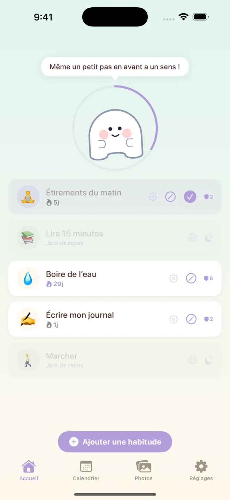
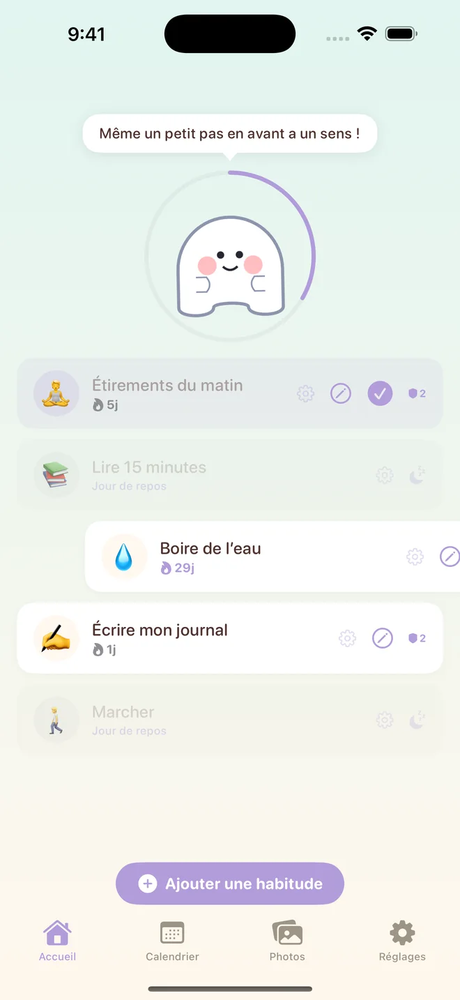
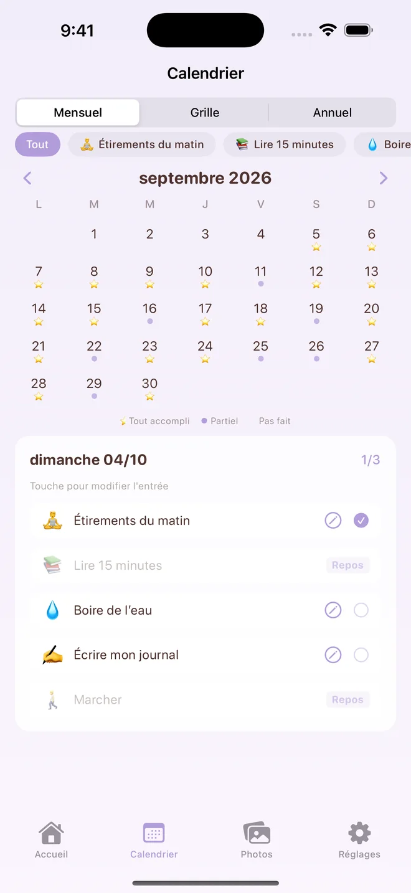

Marutto a le sentiment que la journée va être chanceuse ! Mais aucune preuve !
Un compagnon bavard. Des habitudes plus amusantes.
Transforme tes habitudes
en aventures.
Termine toutes tes habitudes du jour et reçois une photo de voyage. Avec Marutto pour t’encourager et 250 photos à découvrir, chaque petit pas a sa récompense.
iPhone et iPad / Gratuit avec publicités / Sans compte
Voici Marutto
250photos de voyage à collectionner

Marutto a le sentiment que la journée va être chanceuse ! Mais aucune preuve !
250photos de voyage à découvrir
✓un geste pour noter une réussite
FREEgratuit et sans compte
MEET YOUR CHATTY LITTLE COMPANION
Un compagnon bavard.
Le plaisir de le retrouver.
Il te félicite, t’encourage et partage parfois une petite pensée rigolote. Marutto, la fée des habitudes, accompagne chacun de tes petits pas. Que va-t-il raconter aujourd’hui ?
Waouh ! Tu as fait ta lecture ! Marutto est ravi !
Se reposer n'est pas une mauvaise chose. Marutto le garantit !
Il y avait des nuages sur le sommet du Fuji, et Marutto voulait un chapeau aussi !
Choisis un moment pour découvrir les petits mots de Marutto.
Exemples de messages de l’application.
Un petit bonjour à chaque visite.
Des salutations selon le moment de la journée et la saison. De petites anecdotes qui donnent le sourire.
Chaque réussite mérite des bravos.
Marutto célèbre tes petits progrès pour te donner envie de faire le prochain pas.
À tes côtés les jours de repos aussi.
Quand tout ne se passe pas comme prévu, un encouragement bienveillant pour reprendre à ton rythme.
01 — LITTLE BY LITTLE
De petits pas.
De quoi sourire chaque jour.
S’étirer, lire une page, boire un verre d’eau. Commencez petit : Marutto est là pour vous encourager.
01

A SMALL STEP FORWARD
Un glissement.
Un pas de plus.
Fais glisser une habitude pour la valider. Tu peux annuler une validation ou modifier les jours précédents dans le calendrier.
Touchez pour une petite victoire
Démonstration du site
Les bons jours comme les jours difficiles, Marutto t’encourage.
EVERY LITTLE DAY COUNTS
Vois tes progrès.
Prends confiance.
Consulte le calendrier mensuel, la grille des habitudes et l’historique annuel. Tu peux aussi ajouter des notes à chaque habitude.
02

02 — A WORLD OF LITTLE REWARDS
Des habitudes au quotidien.
Un monde à découvrir.
250✦
photos de voyage à collectionner


Gardez vos habitudes, collectionnez les souvenirs.
Termine toutes tes habitudes du jour pour recevoir une photo de voyage. Découvre 250 photos avec les journaux de voyage de Marutto et des anecdotes. Tu peux aussi regarder une publicité vidéo pour obtenir une photo bonus.
Partage les photos et les journaux de voyage
Ouvre une photo de ta collection et utilise le bouton Partager pour transmettre la photo et le journal, avec le lien de l’app et #MaruttoTracker.
03 — AT YOUR OWN PACE
Un quotidien qui suit votre rythme.
Suis ton propre rythme
Choisis les jours de la semaine, les rappels et l’heure qui marque le début de ta journée. Consulte tes progrès du jour dans le widget de l’écran d’accueil.
Protège ta série avec des boucliers
Gagne un bouclier tous les sept jours consécutifs. Les boucliers peuvent protéger ta série si tu oublies un jour. Tu peux activer ou désactiver cette fonction dans les réglages.
18 options de langue et de région
Profite de l’interface, des messages de Marutto et des journaux de voyage dans la langue de ton choix.
L’application est-elle gratuite ?
Le téléchargement et l’utilisation sont gratuits. L’app contient des publicités, avec des vidéos facultatives pour recevoir des photos de voyage supplémentaires.
Faut-il créer un compte ?
Aucun compte n’est nécessaire. Vos habitudes sont enregistrées sur votre appareil. Compatible avec iPhone et iPad sous iOS 17 ou version ultérieure.